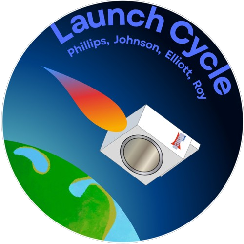

Our design uses a hydraulic system to transfer water between two large syringes, with a third to handle air entering and leaving the system. We have two 500mL syringes, one for water and one for air, and a 1000mL syringe in order to house the shirt that we are washing. At this scale, this design uses a childs shirt to test the concept but if it was actually implemented for an adult polo, the tubing would be increased in order to hander more material. Connecting both of the smaller syringes to the bigger one, we have ball valves to manage when water and air can enter or leave the system in order to manage the seperation of air and water in this pressurized mechanism. For this first prototype everything is done by hand, without any motors or automated parts but those would be implemented in each part of this process in the final desing.
To start the washing process of the shirt, the ball valve connecting the smaller syringe with water inside to the bigger one is closed, and the valve connecting the syringe with air in it is open. The large syringe is compressed, getting as much air out of the system as possible, before both ball valves are switched. Then the syringe with water in it is compressed, pushing water into the larger syringe with the shirt inside, injecting water into the shirt.
To agitate the clothing once it is wet, our system simply pushes water back and forth through the shirt. The smaller syringe containing water is repeatedly compressed and expanding, pulling water into it, through the shirt which is on the other side of the tubing, and then pushing it back through the same system. This process is repeated multiple times, continuing to push water both directions through the shirt.
In order to remove the dirty water that is now in the shirt, the system compresses the shirt as much as possible to push as much water as possible back through the system. The large syringe is compressed as much as possible, pushing against the shirt with lots of pressure so that the water will be squeezed out of the shirt and back through the tubing. After this, the ball valves are once again switched, sealing the water-filled syringe and opening the one filled with air, allowing the Large syringe to be opened and remove the shirt from the system with minimal water still in it.